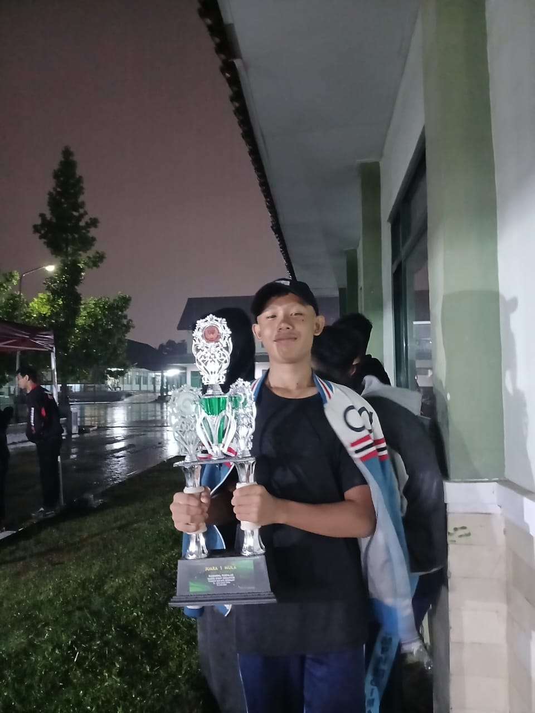

Nama: Fadhil Afrizal M
Kelas:X PPLG 2
Sekolah: SMK SANGKURIANG 1 CIMAHI
Saya memilih tema edukasi pelestarian lingkungan dan budaya karena saya ingin membantu meningkatkan kesadaran generasi muda tentang pentingnya menjaga bumi dan melestarikan kekayaan budaya Indonesia. Selain itu, tema ini sangat relevan dengan kondisi dunia saat ini yang menghadapi kerusakan lingkungan serta modernisasi yang mulai menggeser nilai-nilai tradisional.